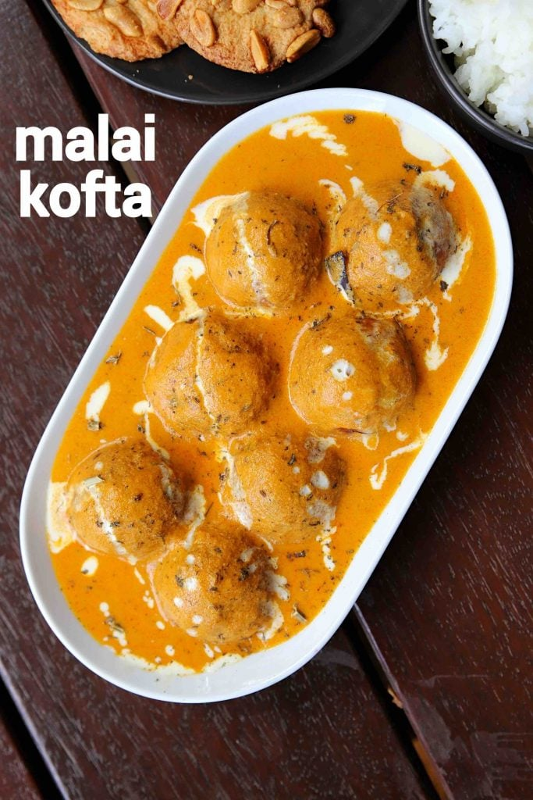

Malai Kofta Recipe

Description
An extremely popular and tasty north indian creamy curry recipe made
with aloo and paneer balls in onion and tomato sauce.
It is one of the creamiest curry recipe from the North Indian
cuisine bucket and loaded with malai or cooking cream.
You may either serve this recipe with choice of indian flatbreads
or perhaps with choice of flavoured rice
Ingredients
- For Kofta
- 3 potato,boiler & mashed
- ¾ cup paneer,grated
- 1 chilli, finely chopped
- 2 tbsp coriander,finely chopped
- ¼ tsp cumin powder
- ½ tsp salt
- 2 tbsp raisins
- 2 tbsp cashew / kaju, chopped
- 2 tbsp maida / plain flour
- oil, for frying
- For Onion Tomato Puree
- 2 tbsp oil
- 1 onion, sliced
- 1 tsp ginger garlic paste
- 2 tomato, sliced
- 2 tbsp cashew
- For Curry
- 1 tbsp butter
- 2 tbsp oil
- 1 tsp cumin
- 2 pod cardamom
- 1 bay leaf
- 1 inch cinnamon
- 2 clove
- 1 tsp kashmiri red chilli powder
- ½ tsp turmeric
- ¾ tsp coriander powder
- ¼ tsp cumin powder
- 1 tsp salt
- ¼ cup cream / malai
- ½ cup water
- 1 tsp kasuri methi, crushed
- ¼ tsp garam masala
Steps
- Kofta Preparation
- Firstly, in a large mixing bowl take 3 potato
and ¾ cup paneer
- Add 1 chilli, 2 tbsp coriander, ¼ tsp cumin powder
and ½ tsp salt
- Add 2 tbsp raisins and 2 tbsp cashew to have a
crunchy bite in kofta
- Mix well making sure all the spices are well combined
- Add 2 tbsp maida and mix well forming a soft dough.
maida helps to absorb moisture and bind the mixture well
- Prepare a small ball sized kofta by greasing hand with oil
- Deep fry on medium hot oil
- Stir occasionally, making sure the koftas are
cooked uniformly
- Fry until the kofta turn golden brown and crisp
- Drain off the koftas and keep aside
- Curry Preparation for Malai Kofta
- Firstly, in a pan heat 2 tbsp oil and saute 1 onion,
1 tsp ginger garlic paste
- Saute until onions changes colour slightly
- Further add 2 tomato and saute slightly
- Now add 2 tbsp cashew and continue to saute until
tomatoes soften completely
- Cool completely and transfer to a blender
- Blend to smooth paste adding water if required
- Now filter the mixture to get rid of skin and seeds
- Filter until silky smooth onion-tomato puree is attained.
Keep aside
- In a large kadai heat 1 tbsp butter and 2 tbsp oil
- Saute 1 tsp cumin, 2 pod cardamom, 1 bay leaf,
1 inch cinnamon, 2 clove until it turns aromatic
- Further keeping the flame on low, add 1 tsp chilli powder,
½ tsp turmeric,¾ tsp coriander powder and ¼ tsp cumin powder
- Saute until the spices turn aromatic
- Further add in the prepared onion tomato puree,
1 tsp salt and mix well
- Cover and cook until the mixture starts to thicken and
oil separates from sides
- Now add ¼ cup cream and mix on low flame
until it's well combined
- Further, add ½ cup water and mix well adjusting consistency
as required
- Get the curry to a boil, add 1 tsp kasuri methi and
¼ tsp garam masala. mix well
- Finally, pour the curry over kofta and malai kofta
is ready to enjoy.
Back to Main